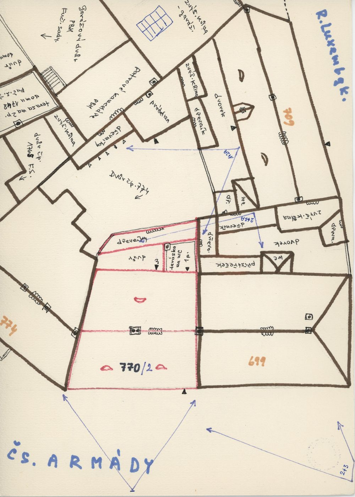
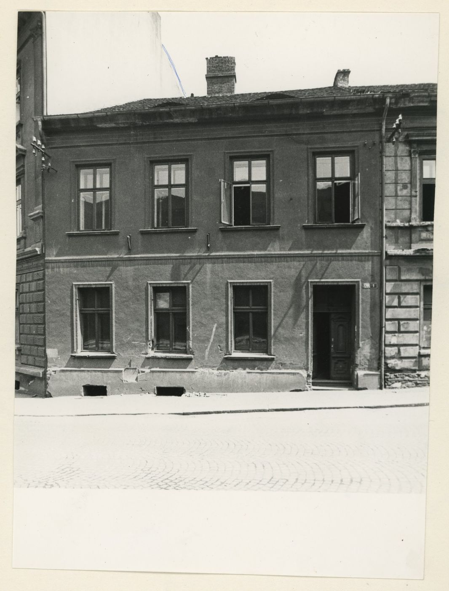
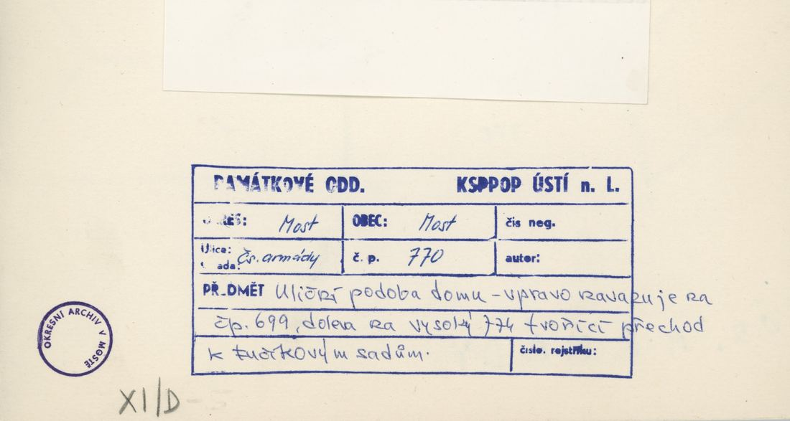
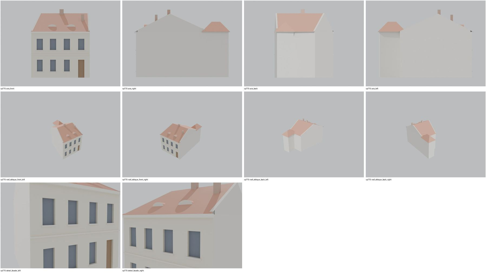
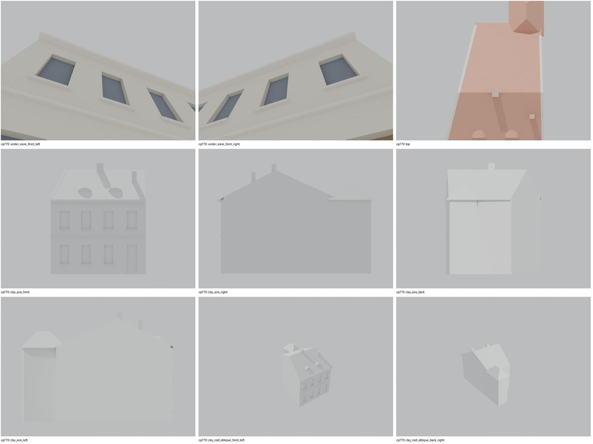
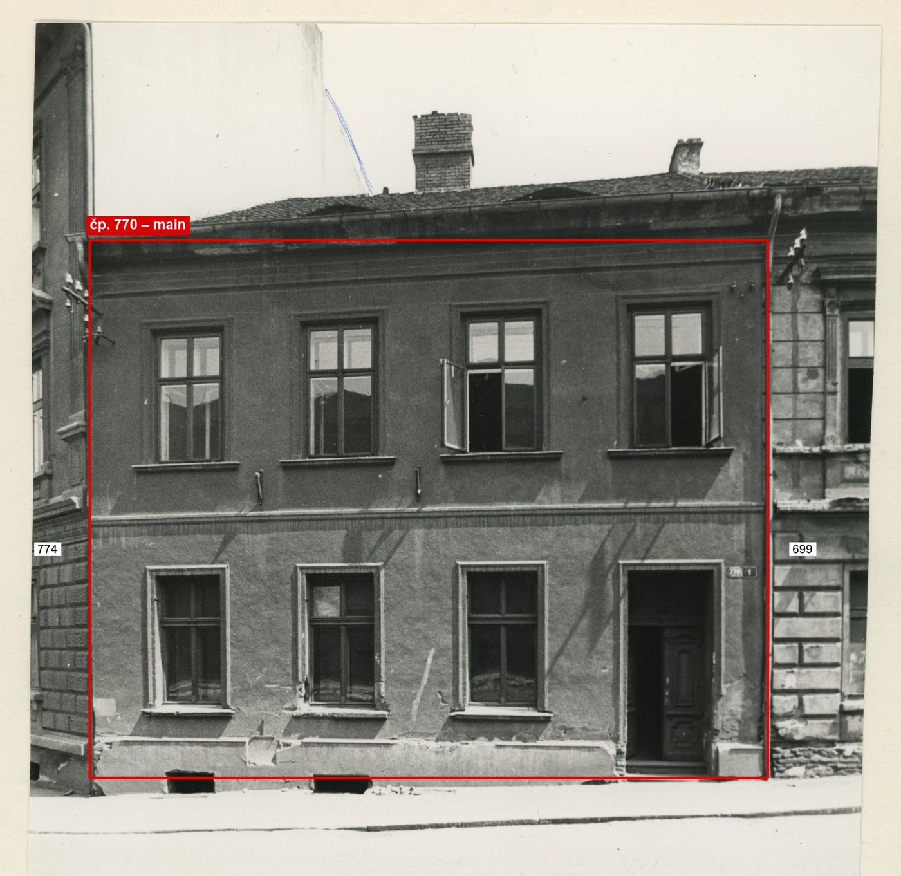

Identita domu
Dvoupodlažní dům mezi 774 a 699 (plán cp_770_001: „770/2“, 774 vlevo, 699 vpravo). Foto cp_770_001: čelní průčelí 6 os v patře, v přízemí 5 oken + dveře vpravo, kordonová římsa; cp_699,770_001/002 (po demolici / nároží).
Použité prameny: cp_770_001 PLANE; cp_770_001, cp_699,770_001, cp_699,770_002 PHOTO.
GIS: GIS id 1513 (149 m², 7 vrcholů). V oblasti „Cs_Armady“ je dům veden podruhé se stejnými přílohami.
Prameny (9 příloh)
Všechny přílohy domu v databázi Libuše, každá otevřená a zapsaná v plan_search.json. Stav rešerše plánů: found; situační/střešní náčrt (ruční, nekótovaný, PLANE,BW) – není stavební výkres; půdorysné rozměry z GIS nebo odhad. Kliknutím otevřete větší náhled.


situační náčrt
SHA-256 60c3756aef18…

fotografie
SHA-256 42a5011c2ab6…

fotografie
SHA-256 b1124e071010…

fotografie
SHA-256 102a82b33cb7…


fotografie
SHA-256 80e2db33c014…

archivní karta (rub) · výřez textu
SHA-256 1f254bfcd3de…

archivní karta (rub) · výřez textu
SHA-256 d9cf37ed2d25…

archivní karta (rub) · výřez textu
SHA-256 0dae6bc26b02…


archivní karta (rub) · výřez textu
SHA-256 f9531de65ca1…
Model
| Revize modelu | r4 (zachované revize: r1, r2, r3, r4) |
|---|---|
| Poloha | GIS půdorys id 1513 |
| Šířka průčelí | 11,47 m |
| Výška okapu | 9,00 m (odhad) |
| Podlaží | 2 |
| Střecha podle pramenů | sedlová/valbová s volskými oky |
| Střecha v modelu | valbová / sedlová (hřeben, valby, štíty) |
| Otvory | 8 |
| Vikýře / vedlejší hmoty | 2 / 0 |
| Polygonů | 262 |
Zdroje rozměrů, jak jsou zapsány v plánu modelu
| Rozměry | GIS id 1513 polygon: main block 11.47 x 13.4 m + rear wing |
|---|---|
| Průčelí | photo cp_770_001: 6 axes upper floor, 5 windows + door (right) ground floor, string course; sketch cp_770_001: 2 eyebrow dormers |
| Střecha | saddle between party walls (sketch), ridge along the street |
Kontrola r4: brána geometrie a 19 pohledů
Automatická brána (uzavřené podkroví, krytí střechou, UV, síť, počty otvorů proti fotografii s rámečkem) a 19 renderů: čtyři osy, čtyři šikmé pohledy na střechu, dva detaily průčelí, dva pohledy pod přední okap, pohled shora a šest pohledů bez barev materiálů. Stav: prošla.


Nálezy a opravy
- 4 osy, dveře ve 4. ose, kordon, 2 komíny a 2 volská oka podle cp_770_001
- štíty u obou společných zdí po linii GIS bez přesahu
- zadní křídlo s valbou
Revize r4: doklad fasád a změny
Okna a dveře se počítají na fotografii s červeným rámečkem po dělicích zdech domu. Řádky oken jsou zdola nahoru; „hypotéza“ jsou otvory, které na snímku vidět nejsou.
| Fasáda | Okna po podlažích | Hypotéza (id otvorů) | Poznámka |
|---|---|---|---|
| main | 3 / 4 + dveře 1 | – | přízemí 3 okna + dveře (4. osa), patro 4 okna |


cp_770_001 (čelní snímek): 4 osy – patro 4 okna, přízemí 3 okna + dveře vpravo (domovní číslo 770 vedle dveří), kordonová římsa, 2 komíny, 2 volská oka. Měřítko 92,4 px/m z šířky GIS 11,47 m: kordon 4,5 m, okna patra 5,4–7,6 m, přízemí 1,2–3,5 m, římsa asi 9,0 m (r2: 7,3 m). Výška je odvozená z šířky GIS (model_hypothesis); snímek 774 dává pro římsu 770 asi 8,3 m.
Změny proti r2/r3
- closed attic, eave closures, gables along the roof underside, flat-roof covering slab, names for tools/most_qa (z4_post.py)
- gate pass 2: gable end(s) follow the shared wall line of the footprint, no verge overhang at the party wall: left = party wall with 774, right = party wall with 699
- gate pass 3: main roof reaches the rear wall between x 3.58 and 7.83 (y 14.2-14.28); ridge kept at y 6.7, rear slope slightly flatter (model_hypothesis)
- facade evidence (framed frontal photo cp_770_001): 4 axes (r2: 6 upper / 5 ground + door), door on the 4th axis; storey heights and eave 9.0 m scaled from the photo; second chimney and dormer positions from the photo
Hypotézy
Vše níže je model_hypothesis, provisional, locked: false.
- výšky odhad
- volská oka podle plánu (2 ks)
- roof ridge along the street, gable party walls
- rear wing height estimate
- all storey heights, opening sizes and roof pitches are estimates from photographs (model_hypothesis, provisional, locked=false)
- wing roof ends at junctions closed as hips (valley junction approximated)
- r3: rear wing eave = main eave (single masonry extrusion)
- eave 9.0 m from the frontal photo cp_770_001 scaled by the GIS width 11.47 m (r2: 7.3 m); photo cp_770,774_001 suggests about 8.3 m (model_hypothesis, provisional, locked=false)
Soubory
- Model čp. 770, GLB
- Pracovní složka: F:\MOST\output\zatecka_street_claude_2026-10-17\houses\cp770\
plan_search.json,geometry_plan.json,README.md,texture_handoff_spec.json,r4/cp_770_G_r4.blend,r4/qa/qa_review.json, rámečkyframes/cp770_*